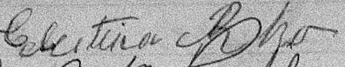
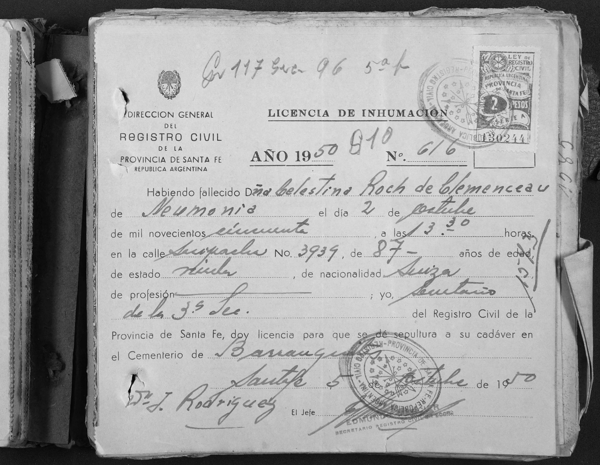
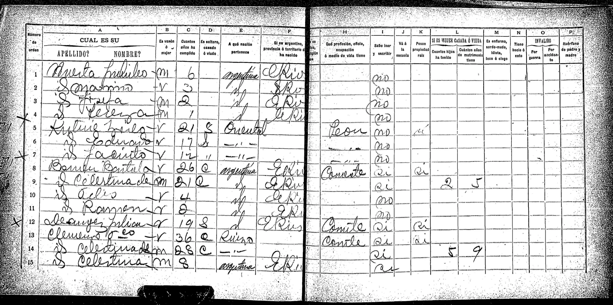

Residencias
| Año | Lugar | Detalle / Observación |
|---|---|---|
| 1863 | Nacimiento | Censo de Conthey |
| 1873 | Colonia Cullen, San Javier, Santa Fe, Arg | Nacimiento de su hno Jose Luciano Roh |
| 1892 | Colonia San Jose, Entre Rios, Argentina | Bautismo de Leon Francisco |
| 1913 | Santa Fe, Argentina | Segun acta de matrimonio de Leon Francisco |
Defunción
Causa: Neumonia Domicilio: Suipacha 3939 Fecha: 02 octubre 1950
Obvservacion: Aparece como "Celestina Roch de Clemenceau"
Investigación
Censo de Colon de 1895
parecen en él:
- Jose Roh (Suizo), edad 54
- Maria Putallaz (Suiza), edad 58
- Marianna Roh (Suiza), edad 32
- José Roh (Suizo), edad 24, casado
- Manuela Roh (Argentina), edad 18, casada, vive en Entre Rios
- Mauricio Roh (Argentino), edad 16
- Luisa Roh (Argentina), edad 18
- Luisa Roh (Argentina), edad 9
Censo de 1895
Dice ahí que tiene 9 años de matrimonio con Celestina. Por lo tanto, la fecha probable de matrimonio o que conoció a Celestina es 1886. Esta es al 03/05/2026 la única pista sobre dicha fecha. La ultima fila parece pertenecer a la familia de Francisco. Se lee algo como: Rog Mariano, es varón de 14 años, sabe leer y escribir y es oriundo de Entre Rios. Será algún hijo previo de Celestina o de su hermana Mariana?
Documentos



Censo Conthey 1870